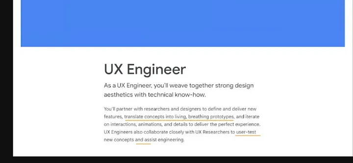

前言
最近聽了 SAVVY UX SUMMIT 2022 其中一位講者 Siva Ranjan 演講的主題 「Adios Figma, Hola JavaScript! My journey from being a UX designer to a front-end engineer」，主要在介紹 UX Engineer (以下簡稱 UXE) 這個新興的職業，以及他從設計師轉換到 UXE 的心路歷程。
因為自己本身是設計師背景，所以對這個主題蠻好奇的，也希望可以提供給設計師們多一個職涯規劃的選項。
下面記錄了這次演講的心得和重點，對於想認識 UXE 這個職業，還有身為設計師到底該不該去學 coding 會有一些不一樣想法。
附註：Siva 本身目前在 Netflix 任職約一年，之前在 Microsoft 原本是當 UX Designer，後來花了一兩年自學 HTML/CSS 和 Javascript，然後開始在公司做一些需要 coding 的小專案，四年後正式轉職到 UXE 的職位（毅力驚人）。
Takeaway
- 什麼是 UXE？
- UXE 在幹嘛？
- 你適合當 UXE 嗎？
免責聲明
在開始這個主題之前，Siva 有特別強調兩點：
This is not a call to UXDs to start coding
這場演講並不是要鼓吹每個 UX Designer 都跑去寫 code，只是多提供一個職涯選項給喜歡 Coding 的人。
UX Engineer ≠ UX Designer + UI Dev
UXE 並不是要你同時當設計師，又要同時當工程師，一個人當兩個人用，他有它特殊存在的意義，後面會在細說。
ＯＫ好，那開始進入主題：
什麼是 UXE？
舉例來說，軟體開發會有以下成員組成：（當然每個公司不一樣）
- UX/UXR
- UI
- Front end Dev
- Back end Dev
- Database Dev
- IT/DevOps
要是把以上成員分成兩類的話，UXE 這樣的角色是會落在前三個 UX/UXR, UI, Front end Dev 這個群組裡面，也就是說 UXE 其實和設計師、研究員和前端工程師會有較多的協作。那為什麼會需要 UXE 這樣的角色呢？
設計師和工程師使用不同的語言
譬如，設計師在講 Saturation (飽和度) 或 Kerning (字母間距) ，工程師聽到可能一頭霧水，當工程師在講 Caching (緩存)、*Cumulative layout shift (累計版面配置轉移) ，設計師應該也是黑人問號。
設計師和工程師有不同的優先序
設計師最在意 Let’s make it easy to use，使用者好不好操作，流程順不順，工程師最在意的是 Let’s make it and ship it，當兩邊目標不一樣，又沒有人跨出一步想去理解對方的時候，雙方人馬就會漸行漸遠，形同陌路。google_uxe_JD
這個時候，就會需要一個中間人出來打破僵局，出來當翻譯/協調者，也就是 UXE 出場的時候了！
但就我目前觀察到的職場現狀，通常擔任協調者的角色幾乎 PM 居多，PM 本身需要懂一些工程術語，或是真的有些厲害的工程師，會自己把專業術語翻譯成人類聽得懂的語言，給其他非工程背景的人理解。（目前有 UXE 這類職缺都是偏大型企業，猜測因為分工更細，所以有這種需求產生）
UXE 在幹嘛？

上面是節錄 Google UX Engineer 的 JD，裡面提到：As a UX Engineer, you’ll weave together strong design aesthetics with technical know-how.
身為 UXE，會期待你同時擁有設計美感，和技術上的專業技能。工作上會需要和研究員/設計師合作，把新功能的概念想法轉換成更符合真實產品的 prototype。因為設計師用 figma 做 prototype，仍然以設計工具可以做到的程度在設計，但是 UXE 是用 coding 在做 prototype，不會有設計師做得出來但實際上產品做不出來的狀況發生，也就是更具有真實性。
這邊我覺得 Google 的 UXE, Mimin 寫了一篇文章裡舉了很好的例子：
今天團隊想開發一個新功能來做使用者測試，但是這功能需要後端工程師一個月的時間刻一個新的 API，同時這個功能很複雜，無法用單純的「按到底」的 prototype 給使用者測試，這個時候，登登登，UXE 就登場了，他們可以和研究員討論如何在沒有後端的情況，用程式做出高品質的 prototype 去驗證這個新功能的價值。
另外 Siva 還有提到其中一個工作內容，是重新設計一些公司內部系統、數據相關的 Dashboard 等等，像是他在 Netflix，使用者在觀看串流的時候，要是看到一半突然 crash，裝置會回傳 log 回去給 Netflix，他就可以負責把這些 data 做成 Dashboard 來觀測到底哪裡出了問題。也因為 UXE 具備 design sense 所以像這樣的專案不需要額外再花其他設計師的資源，UXE 可以直接完成。
接下來，就是問問自己，
你適合當 UXE 嗎？
從 Skill Stacking 的角度回答這這問題之前，我們先來聊聊什麼是 Skill Staking：
Skill Staking 是 Scott Adams 《呆伯特》漫畫作者提出的職涯建議：
If you want to be extraordinary, you have two paths:
- Become the best at one specific thing.
- Become good (top 25%) at two or more things.
- Scott Adams (source)
簡單來說，你想當人上人，要嘛就是成為某專業領域裡面最強的，不然就是成為兩個以上的專業領域的前 1/4 強，也就是兩個互補技能 > 一個專精技能。
Siva 另外舉了個很有趣的例子，互補的加乘效果為什麼比較大？你今天很會唱歌，同時又很會游泳，但是這兩個技能互補的用處不大。但要是你今天很會唱歌 ，同時又很會寫歌，那你在會寫歌又會唱歌的這個領域裡就是個佼佼者了！可以參考下面的圖：

如果你想成為某技能的 Top 1％，可能要努力到爆炸，擠到 Skill 1 or Skill 2 的紅色尖端。但假如，你今天還是很努力，但不用到爆炸的程度，成為 Skill 1 的 Top 10% 和 Skill 2 的 Top 10%，那你就可以成為世界上同時會這兩種技能的頂尖人物！
也就是說，你今天又會設計又會寫程式，對於你職涯一定是大加分，當然薪水也是另一個很大的誘因，大家應該都知道工程師的薪水普遍來說比設計師高，尤其是越 Senior 差距越大，看不到車尾燈那種（希望我可以早點知道這件事）。
但你也要問問自己以下幾個問題：
- 不是每個人都適合寫程式，要是你無法真心喜歡寫 code，真的不用折磨自己。
- 不是每個公司都有這樣的職位，也不是每個人都熟悉這樣的職位可以帶來什麼好處，你可能需要找機會讓大家發現理解你可以貢獻的地方。
- 培養第二個專業技能需要花大量的心力和時間，要問自己是否願意投資下去。 假如你是設計師，對於如何寫程式把設計轉化成真實的產品很有興趣，那真的值得嘗試，假如你是工程師，對於如何設計互動，流程和介面的細節也很有興趣，那也很推薦嘗試。
希望這篇分享對大家的職涯規劃和好奇心有些幫助。